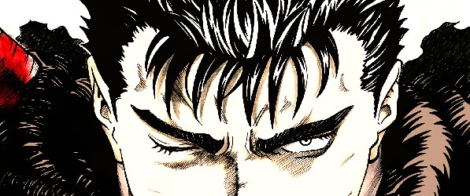

Berserk
Un manga dark fantasy épique de Kentaro Miura, suivant Guts, un mercenaire en quête de vengeance dans un monde brutal rempli de démons et de conflits.
Effectivement, les mangas sont souvent comparés à des bandes dessinées, mais ils possèdent des caractéristiques uniques qui les distinguent. D'origine japonaise, le terme "manga" désigne des œuvres graphiques et narratives qui s'étendent bien au-delà de simples BD. Ce sont des histoires racontées à travers des dessins, mais avec une grande diversité de genres et de styles, allant de l'aventure à la romance, en passant par la science-fiction ou le fantastique.
Une différence importante réside dans le format : les mangas sont généralement publiés en noir et blanc, avec des dessins très détaillés. Ils sont souvent lus de droite à gauche, ce qui reflète la lecture traditionnelle japonaise. De plus, les mangas sont destinés à tous les âges et peuvent aborder des thèmes très variés. Il existe des mangas pour enfants, mais aussi pour adultes, comme les seinen ou les josei, qui explorent des sujets plus matures.
En somme, les mangas sont bien plus qu'une simple BD : ce sont des œuvres culturelles profondes et diversifiées qui ont conquis le monde entier grâce à leur capacité à toucher tous les publics.
Pas du tout ! Bien que certains mangas soient destinés aux jeunes lecteurs, il existe une grande variété de genres adaptés à tous les publics. Des mangas pour enfants (shonen) aux récits plus matures pour adultes (seinen, josei), les mangas abordent une multitude de thèmes : aventure, romance, science-fiction, psychologie, etc. Chaque âge, chaque goût trouve son manga, ce qui en fait une forme d'art universelle et accessible à tous.
Il existe 10 grands types principaux, et chaque type comporte lui-même des sous-catégories. Sur cette pages nous allons surtout aborder un type : le Seinen
Les seinen sont des mangas destinés à un public adulte, généralement masculin, mais pas exclusivement. Ils se caractérisent par des thèmes plus matures et complexes, abordant souvent des questions sociales, philosophiques ou psychologiques. Contrairement aux shonen, les histoires de seinen sont plus réalistes, avec un ton plus sérieux, parfois violent ou sombre. Les dessins sont souvent plus détaillés et raffinés. Quelques exemples de mangas seinen populaires sont Berserk, une œuvre épique et sombre, Ghost in the Shell, qui explore les questions de l'intelligence artificielle, Akira, une référence en matière de cyberpunk, Dorohedoro, un mélange d'humour noir et de fantastique, et Pluto, qui aborde un histoire sombre qui mêle incroyablement douloureusement parentalité et robot.
Découvrez-en 3 parmi les plus connus :
Un manga dark fantasy épique de Kentaro Miura, suivant Guts, un mercenaire en quête de vengeance dans un monde brutal rempli de démons et de conflits.
Adaptation du roman Musashi, Vagabond suit Miyamoto Musashi, un samouraï légendaire, dans sa quête de maîtrise de soi et de duels dans le Japon féodal.
Manga de Boichi, racontant Ken, un jeune homme devenu chef de gang pour protéger la femme qu'il aime, mêlant action, humour et loyauté.